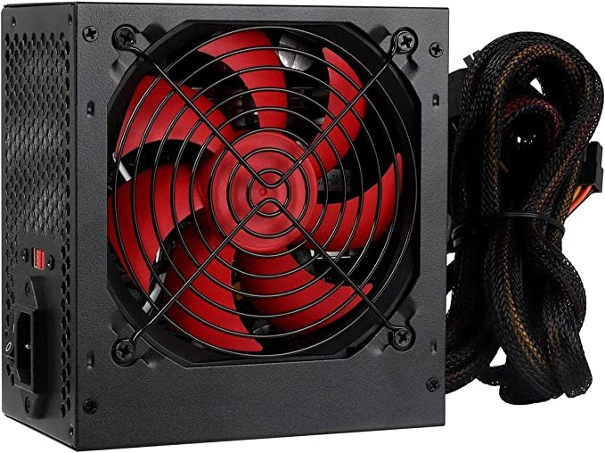
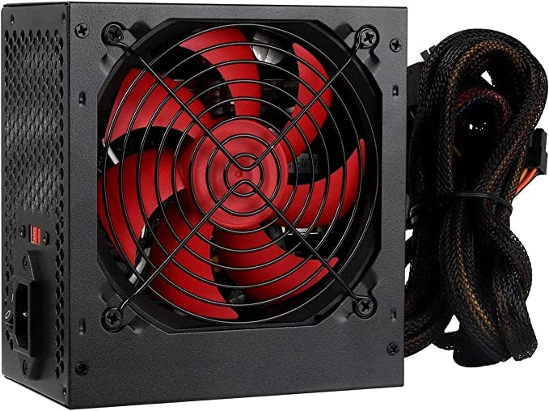

Fonte Corsair CX650F RGB - 650W, 80 Plus Bronze, Modular, Preto - CP-9020217-NA

R$:699,90
HD Interno, Barracuda Compute HDD 3.5, 4TB, ST4000DM004, Seagate, HD interno, Prata

R$: 155,90
Fonte ATX 500W Bivolt Crusader Fortrek
R$:143,24


As fontes de alimentação possuem função principal de transformar a corrente elétrica da rede, que chega em uma voltagem alta, para uma voltagem menor, que é a indicada para o hardware do computador. Além disso, a fonte também garante a estabilidade da voltagem. A rede elétrica pode sofrer variações, o que pode ser prejudicial se ligada diretamente aos componentes. A fonte mantém a voltagem correta. Outra função das fontes de alimentação é isolar o circuito interno do PC da rede de energia elétrica. Em caso de apagões ou instabilidades na corrente elétrica, qualquer dano é suportado pela fonte, o que protege os componentes do PC, como placas de vídeo, memórias RAM, processadores e placa-mãe, que são mais sensíveis e caros, se compararmos a uma fonte.
Fonte Corsair CX650F RGB - 650W, 80 Plus Bronze, Modular, Preto - CP-9020217-NA
HD Interno, Barracuda Compute HDD 3.5, 4TB, ST4000DM004, Seagate, HD interno, Prata
Fonte ATX 500W Bivolt Crusader Fortrek
